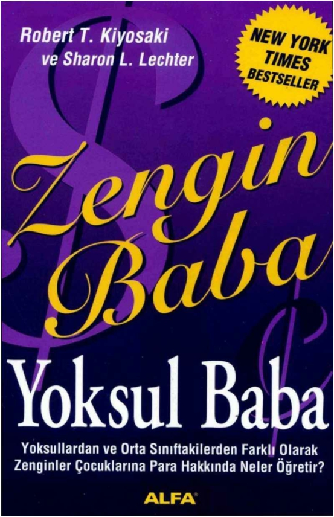
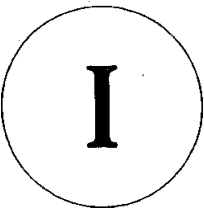
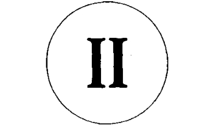

1
downloaded from KitabYurdu.org
Zengin Baba Yoksul Baba Zengin Baba Yoksul Baba Robert T. Kiyosaki Sharon L. Lechter
Alfa Yayınları 1600 Finansal Gelişim 3
Zengin Baba Yoksul Baba
Rich Dad, Poor Dad
Roberfc T. Kiyosaki • Sharon L. Lechter
İngilizce Aslından Çeviren Dilek Şendil
1. Basım: Eylül 2005 3. Basım.: Temmuz 2006 ISBN : 975 - 297-625- 5
Yayıncı ve Genel Yayın Yönetmeni M. Faruk Bayrak Yayın Koordinatörü ve Editör Rana Gürtuna Pazarlama ve Satış Müdürü Vedat Bayrak Kapak Tasarımı Insync Graphic Studio, Inc./ABD
© 2004, ALFA Basım Yayım Dağıtım Ltd. Şti.
© 1997,1998 by Robert T. Kiyosaki and Sharon L. Lechter Kitabın Türkçe yayın haklan Onk Ajans aracılığıyla Alfa Basım Yayım Dağıtım Ltd. Şti.'ne aittir. Yayınevinden yazılı izin alınmadan kısmen ya da tamamen alıntı yapılamaz, hiçbir şekilde kopya edilemez, çoğaltılamaz ve yayımlanamaz.
Alfa Basım Yayım Dağıtım Ltd. Şti.
Ticarethane Sokak No: 53 Cağaloğlu 34410 İstanbul,
2
downloaded from KitabYurdu.org
Turkey Tet (212) 511 53 03 - 513 87 51 - 512 30 46 Faks: (212) 519 33 00 www.alfakitap.com info@aIfakitap.com
Baskı ve Cilt Melisa Matbaacılık
Çiftehavuzlar Yolu Acar Sanayi Sitesi No: 8 Bayrampaşa - İstanbul Tel: (212) 674 97 23 Faks: (212) 674 97 29
Bu kitap çocukların en önemli öğretmeni bütün ana - babalara adanmıştır.
Teşekkür
Onca kişiye nasıl teşekkür edilir? Öncelikle, bu kitap güçlü kişilik modelleri oluşturan iki babama, bana sevgiyi ve iyi kalpliliği öğreten anneme bir teşekkür niteliğindedir. Öte yandan başta hayatımı bütünleyen eşim Kim olmak üzere bu kitabın yazılmasına doğrudan katkıda bulunanlar olduğu da bir gerçek. Kim evlilikte, işte ve hayatta benim ortağım. O olmasaydı yolumu yitirirdim. Sonra Kim’in annesiyle babası Winnie ve Bili Meyer’e böyle harika bir
evlat yetiştirdikleri için müteşekkirim. Kitabın
bilgisayarımda kayıtlı parçalarını alıp bir araya getiren Sharon Lechter’a teşekkür borçluyum. Sharon’ın kocası, usta bir mülkiyet avukatı olan Mike’a ve çocukları Philip, Shelly ve Rick’e katılımları ve katkılarından dolayı teşekkür ederim. Finans bilgisi ve verdiği ilhamlar için Keith Cunningham’a; dostluklarını esirgemeyen ve beni
3
downloaded from KitabYurdu.org
yüreklendiren Larry ve Lisa Clark’a; teknik dehasın dan dolayı Rolf Parta’ya; öğrenmenin ayrıntılı inceliklerini benimle paylaşan Anne Nevin, Bobbi DePorter ve Joe Cha - pon’a; mesleki destekleri için DC ve John Harrison’a, Jannie Tay, Sandy Khoo, Richard ve Veronica Tan, Peter Johnston ve Suzi Dafnis, Jacqueline Seow, Nyhl Henson, Michael ve Monette Hamlin, Edwin ve Camilla Khoo, K.C. See ve Jes- sica See’ye; bana eşsiz, grafikler hazırlayan InSync’in iki elemanı Kevin ve Sara’ya; John ve Shari Burley’e; Bili ve Cindy Shopoffa; Van Tharp; mali zekâlarını benden esirgemedikleri için Diane ICennedy, C: W. Allen’a, Marilu Deignan, Kim Arries ve Tom Weisenborn’a teşekkür ederim. Zihnimi açan Sam Georges, Anthony Robbins, Enid Vien, Lawrence ve Jayne Taylor - West’e, Alan Wright’a, Zig Ziglar’a; J. W. Wil- son, Marty Weber, Randy Craft’ei Don Mueller’a, Brad Wal- ker’a, Blair ve Eileen Singer’a, Wayne ve Lynn Morgan’a, Mimi Brennan’a, Jerome Summers’a, Dr. Peter Powers’a, Will Hepburıı’e, Dr. Enrique Teuscher’a, Dr. Robert Ma- rin’e, Betty Oyster’a, Julie Belden’a, Jamie Danforth’a, Che- rie Clark’a, Rick Merica’ya, Joia Jitahide’a, Jeff Bassett’a, Dr. TomBurns’e ve Bili Calvin’a bana gösterdikleri yakın arka - daşlıktan ve projelerimi desteklemelerinden dolayı minnet borçluyum; ayrıca Merkez Yöneticilerine ve Girişimciler
4
downloaded from KitabYurdu.org
için Para, Siz ve İşletme Okulu’nun on binlerce mezununa; eşsiz iş ortaklarım Frank Crerie, Clint Miller, Thomas Ailen ve Norman Long’a teşekkür ederim.
İçindekiler
Arayış 1
Dersler
Birinci Bölüm Zengin Baba, Yoksul Baba... 17 İkinci Bölüm Ders 1
Zenginler Para İçin Çalışmaz ....................... 29
Üçüncü Bölüm Ders 2
Finans Bilgilerini Neden Öğretelim? ... 69 Dördüncü Bölüm Ders 3
Kendi İşinize Bakın.................................... 105
Beşinci Bölüm Ders 4
Verginin Tarihçesi ve Şirketlerin Gücü. 117 Altıncı Bölüm Ders 5
Zenginler Parayı Bulur ............................... 133
Yedinci Bölüm Ders 6
Öğrenmek için Çalışın
Para için Çalışmayın................................... 161
Başlangıçlar
Sekizinci Bölüm ....................Engelleri Aşmak
181
Dokuzuncu Bölüm..................... İşe Koyulmak 203
Onuncu Bölüm............................................ Daha Fazlasını
5
downloaded from KitabYurdu.org
mı İstiyorsunuz? ......................................... 233
Sonsöz 7000 Dolara Yüksek.. Öğrenim 243
Giriş
Arayış
Okullar çocukları gerçek dünyaya hazırlıyor mu? Bizimkiler “Çok çalış, iyi not al, semeresini görür, yüksek maaşlı bir işte çok kazanırsın” derdi. Onların yaşama amacı ablamla bana yüksek öğrenim olanakları sağlamaktı, böylece hayatta başarılı olmak adına büyük bir avantaj elde edecektik. Sonunda 1976’da diplomamı -Horida Devlet Üniversitesi Muhasebe Bölümü’nde, sınıfın en iyileri arasında ve takdirnameyle- aldığımda annemle babam amaçlarına ulaşmış oldular. Yaşamlarının en yüksek kazanımıydı bu. “Ana plan” doğrultusunda “Big 8” muhasebe firmasında işe alındım. Uzun bir meslek yaşantısına adım atmıştım; erken yaşta emekli olmayı umut ediyordum.
Eşim Michael da benzeri bir yol izledi. İkimiz de alçakgönüllü yaşam süren, katı iş disiplini olan çalışkan ailelerin çocuklarıydık. Michael da okulu takdirnameyle bitirmişti, ancak onun iki diploması vardı; biri mühendislik,
6
downloaded from KitabYurdu.org
öteki hukuk fakültesinden. Washington D.C.’de patent alımları konusunda ünlü saygın bir hukuk bürosunda hemen iş buldu, önünde parlak bir gelecek, geleceği net bir mesle k yaşantısı uzanıyordu, erken emeklilik de garantiliydi. Mesleklerimizde başarılı olmamıza rağmen beklentileri - miz pek de yerine geliyor sayılmazdı. İkimiz de tamamen haklı nedenlerle birkaç kez yer değiştirdik, fakat emekliliğe yönelik tasarılarımızla ilgili bir adım bile ilerleyemiyorduk. Emekli olacağımız günler için birikimlerimizi ancak kişisel çabamızla artırabiliyorduk.
Üç harika çocuğumuzla mutlu bir aile yaşantımız var. Ben bu satırları kaleme alırken ikisi üniversitede, biri ortaöğrenime başlamak üzere. Varımızı yoğumuzu çocuklarımızın en iyi eğitim olanaklarından yararlanmasına harcıyoruz.
1996 yılıydı, bir gün çocuklardan biri okulda hayal kırıklığına uğramış bir halde geldi eve. Ders çalışmaktan sıkılmış, bıkmıştı. “Kafamı ömrüm boyunca hiç kullanmayacağım bilgilerle dolduran derslere neden boşuna zaman harcayayım?” diyordu.
Düşünmeden cevabı yapıştırdım: “Çünkü,” dedim, “iyi not almazsan üniversiteye gidemezsin.”
“Ne olursa olsun, üniversiteye gitsem de gitmesem de, zengin olacağım,” diye karşılık verdi.
7
downloaded from KitabYurdu.org
Annelik kaygılan ve telaş içinde yanıtladım: “Üniversite diploman olmazsa, iş bulamazsın.”
Zoraki gülümsedi ve bıkkınlıkla kafasını salladı. Aynı konuşmayı daha önce de birkaç kez yapmıştık. Başım eğdi, gözlerini devirdi. Annesinin öğüdü bir kulağından girip öte - kinden çıkıyordu besbelli.
Akıllıydı, sağlam bir iradesi vardı, yine de her zaman kibar ve saygılı bir çocuk olmuştu.
“Anne,” diye başladı. “Zamana ayak uydur! Etrafa bak, en zengin insanlar eğitimleri yüzünden zengin olmadı. Michael Jordan ve Madonna’ya bak. Harvard’dan ayrılan, Microsoft’u kuran Bili Gates hatta. Şimdi Amerika’nın en zengin adamı ve henüz otuzunda. ‘Aklen yetersiz’ diye yaf - talanmış olsa da, yılda 4 milyon dolardan fazla kazanan bir beyzbol atıcısı var.”
Uzun bir sessizlik oldu aramızda. Kafama dank etti, annemle babamın bana verdiği tavsiyelerin aynısını oğluma veriyordum. Dünya döndükçe biz değişiyorduk, fakat tavsiyeler değişmiyordu.
“Anne,” diye devam etti, “ben babamla senin kadar çok çalışmak istemiyorum. Çok para kazanıyorsunuz, oyuncak - larla dolu kocaman bir evde yaşıyoruz. Sizi dinleyecek olur - sam, benim de sizden farkım kalmayacak, daha çok vergi ödeyip daha çok borçlanmak için hep daha çok çalışmam
8
downloaded from KitabYurdu.org
gerekecek. İş güvencesi diye bir şey yok artık; küçülme ve yeterli oranda eleman çalıştırmanın ne demek olduğunu biliyorum. Üstelik, bugünkü üniversite mezunlarının sizin zamanınızdakilerden daha az kazandığının da farkındayım. Doktorları ele al. Eskisi kadar çok para kazanmıyorlar. Sosyal sigortaya, emeklilik ikramiyesine de güvenemem. Benim yeni çözüm yolları bulmam gerek.”
Haklıydı. Yeni çözüm yolları bulması gerekiyordu. Aynısı benim için de geçerliydi. Annemle babamın öğütleri 1945’ten önce doğmuş olanlara yol göstermiş olabilirdi, fa - kat hızla değişen bir dünyada doğmuş olan bizleri felakete sürükleyebilirdi. Artık çocuklarıma, “Okula gidin, iyi notlar alın, sonra da kendinize sağlam, güvenceli bir iş arayın,” di - yemezdim.
Çocuklarımın eğitimine ışık tutacak yeni öneriler bulma - lıydım.
Hembir anne hem de muhasebeci olarak, çocuklarımızın okulda hesaplı olmayla ilgili bilgi edinmemeleri beni kaygı - landırıyordu. Bugünün gençleri daha liseye gitmeden kredi kartı sahibi oluyorlar; gelgelelim, bırakın kredi kartlarında işleyen bileşik faizin nasıl hesaplandığını öğrenmeyi, ne parayla ne de yatırım yapmayla ilgili bir kurs görüyorlar. Hesap ve paranın nasıl işlediği bilgisine sahip olmaksızın kendilerini bekleyen, para harcamanın birikimleri tükettiği
9
downloaded from KitabYurdu.org
dünyaya atılmaya hazır olamazlar.
Üniversitenin ilk yılında büyük oğlumun kredi kartı bor - cu umulmadık rakamlara ulaşınca, yalnızca kredi kartlarını yok etmesine yardım etmekle kalmamış, aynı zamanda ço - cuklarımı para konularında eğitebilecek bir araştırma programına katılmıştım.
Geçen yıl, bir gün kocam işyerinden bana telefon etti. “Burada tanışman gereken biri var,” dedi. “Robert Kiyosaki. İşadamı ve yatırımcı, eğitici bir ürün için patent başvurusu yapmaya geldi. Senin aradığın şey olabilir diye düşünüyo - rum.”
Tam Aradığım
Kocam Mike, Robert Kiyosaki’nin geliştirdiği yeni eğitici ürün olan NAKİT AKIŞI’ndan pek etkilenmişti. İkimizi de denek olarak yazdırdı. Eğitici bir oyundu bu, dolayısıyla yerel bir üniversitede okuyan on dokuz yaşındaki kızıma da katılmasını önerdim; kabul etti.
On beş kişiydi deneye katılanlar, üç kümeye dağıldık. Mike haklıydı. Böyle bir eğitici üründü aradığım. Ama
şaşırtıcı bir yanı vardı: Ortasında şık giyimli dev bir sıçanın yer aldığı rengârenk Monopol oyununa çok benziyordu. Öte yandan, Monopolün tersine iki ayrı yol takip ediyordu nuz, biri içeriden, öteki dışarıdan. Oyunun amacı iç yoldan çıkıp -Robert buna ‘Fare Yarışı’ diyordu- dış yola, bir başka
10
downloaded from KitabYurdu.org
deyişle Ekspres Yol’a, ulaşmaktı. Robert’ın dediği gibi, Ekspres Yol zenginlerin gerçek yaşam oyunlarının taklidiydi.
Robert bizlere ‘fare yarışı’nın ne anlama geldiğini de açık ladı.
“Sıradan bir öğrenim görmüş, çalışkan birinin hayatına bakarsanız, böyle bir yol izlediğini görürsünüz. Çocuk doğar ve okula gider. Onur duyan ana-baba çocukları harikalar yarattıkça, üniversiteye gidince heyecanlanır. Çocuk okulu bitirir, belki de lisansüstü eğitime devam eder. Hedefi güvenli,
güvenceli bir meslek edinmek ya da böyle bir işe girmektir, ister doktor olsun, ister avukat, orduda subay ya da devlet dairesinde memur, çocuk aradığını bulur. Çoğu zaman para da kazanır. Derken kredi kartları yağmaya başlar, sonra sıra alışverişe gelir; daha önce gelmemişse elbette. “Harcayacak parayı bulan çocuk diğer gençlerin bulunduğu yerlere takılır; orada başkalarıyla tanışır, flört eder, evlenir. Hayat çok güzeldir artık, çünkü günümüzde hem kadın hem erkek çalışmaktadır. İki gelir saadettir. Başarılı olduklarını, kendilerini parlak bir gelecek beklediğini hissederler ve bir ev, bir araba, bir televizyon almaya, tatile çıkmaya, çocuk sahibi olmaya karar v erirler.
11
downloaded from KitabYurdu.org
Mutluluk kundağını kucaklarına alırlar. Nakit gereksinimi giderek artar. Mutlu çift kariyerlerinin önemli olduğunu -
anlayıp daha sıkı çalışmaya başlar, terfi etmek, zam almak için didinir. Aylıklarına zam alırlar, bu da ikinci bir çocuğu ve daha büyük bir evi gerektirir. Daha çok çalışır, işyerlerine daha bağlı, iyi birer eleman olurlar. Belli dallarda uzman olmak adına yeniden okula yazılırlar ki kazançları artsın. Belki ikinci bir işe girerler. Gelirleri artar; fakat onunla birlikte vergi dilimleri ve yeni aldıkları geniş ev lerinin emlak vergisi, sosyal sigorta primleri ve diğer vergiler de... Yüksek rakamlı maaş çeklerini alıp bütün bu paranın nereye gittiğini merak ederler. Kredi kartlarıyla hisse senetleri ve mutfaklarına yiyecek alırlar. Çocuklar beş-altı yaşlarına geldiklerinde onların öğrenim giderlerine ve kendi emeklilik yıllarına yönelik yatırım yapma gereği doğar. “Otuz beş yıl önce dünyaya gelmiş olan mutlu çift geride kalan iş yaşantıları boyunca ‘fare yarışında’ tıkanıp kalmışlardır. Çalıştıkları şirketlerin patronları için, vergi ödeyerek devlet için, ipotek taksitlerini ve kredi kartı borçlarını ödeyerek banka için didinirler.
“Bunun yanı sıra kendi çocuklarına da ‘çok çalışın, iyi notlar alın, güvencesi olan bir iş bulun’ öğüdünü vermekten geri kalmazlar. Parayla ilgili öğrendikleri tek şey saf kimselerin öğrendiklerini geçmediği gibi yaşamları
12
downloaded from KitabYurdu.org
boyunca çalışmaktan başka bir şey bilmezler. Aynı süreci bir sonraki çalışkan kuşak da yaşayacaktır. Bu, fare yarışıdır.”
Fare yarışından kurtulmanın tek yolu, hem muhasebeci hem de yatırımcı olarak yeterliliğinizi kanıtlamaktan geçer, diğer bir deyişle uzmanlaşması en güç iki daldan. Bir zamanlar Big 8 muhasebe firmasında çalışmış diplomalı bir yeminli mali müşavir olarak, Robert’ın bu iki konuyu öğretme işini hem eğlenceye hem de heyecana dönüştürmeyi başarmasına şaşırmıştım. Fare yarışını terk etmeye çabaladığımız süreç öyle iyi maskelenmişti ki, öğrenimimizi çabucak unutu verdik.
Bu deney çok geçmeden öğleden sonraları kızımla geçir - diğimiz eğlenceli saatlere dönüşmüştü, hiç açmadığımız ko - nulardan konuşuyorduk. Muhasebeci olarak, gelir beyanna - mesi ve bilanço gerektiren bir oyun oynamak bana göre ko - laydı. Dolayısıyla zamanımı hem kızıma hem de kümedeki diğer oyunculara anlamadıkları kavramları anlatmakla geçiriyordum. O gün fare yarışından çıkabilen ilk kişi - aynı zamanda bütün denekler arasından tek kişi- ben oldum. Elli dakikada işi kapmıştım, oysa oyun yaklaşık üç saat kadar sürdü.
Bizim kümede bir banker, bir işletme sahibi, b ir bilgisayar programcısı vardı. Bu kişilerin, yaşamlarında
13
downloaded from KitabYurdu.org
büyük rol oynayan muhasebecilik ya da yatırım yapma konularında hemen hiçbir şey bilmemelerinden çok rahatsız olmuştum. Gerçek yaşamda kendi mali sorunlarını nasıl çözüyorlardı acaba? On dokuz yaşındaki kızımın anlamaması doğaldı, fakat ötekiler onun ebeveyni olacak yaşta yetişkinlerdi.
Fare yarışından çıkmayı başardıktan sonra iki saat boyunca kızımı ve bu eğitimli, varlıklı kimselerin zar atıp pazarlarında nasıl ilerlediklerini izlemekle geçir dim. Hepsinin bunca çok şey öğrenmesinden memnun olsam da yetişkinlerin basit muhasebe ve yatırım konularında bu denli cahil olması rahatsız ediciydi. Gelir beyann ameleriyle bilançoları arasındaki ilişkiyi kavramakta zorlanıyorlardı. Hisse alıp sattıkça yaptıkları her bir işlemin aylık nakit akışlarını etkilediği akıllarından uçup gidiyor gibiydi. Gerçek dünyada kim bilir daha kaç milyon insan bu konularda bilgili olmadığından nasıl sıkıntı çekiyordu acaba?
Neyse ki bugün eğleniyorlar, diye düşündüm, bütün dik - katlerini oyunu kazanmaya vermişlerdi. Robert yarışmanın sona erdiğini duyurduktan sonra kendi aramızda tartışıp nakit akışı üzerinde görüş alışverişinde bulunmamız için bize on beş dakika süre tanıdı.
Bizim masada oturan işletme sahibi memnun değild i.
14
downloaded from KitabYurdu.org
Oyun hoşuna gitmemişti* “Bunları bilmeme gerek yok,” di - ye sesini yükseltti. “Muhasebecileri, bankacıları, dava vekillerini bu işleri bana anlatsınlar diye tutuyorum.” Robert’ın buna yanıtı şu oldu: “Muhasebecilerin çoğu - nun zengin olmadığını fark etmediniz mi? Ya bankacılara, avukatlara, borsacılara, emlak komisyoncularına ne demeli? Çok şey bilirler, çoğu da akıllıdır, ama çoğu zengin olamaz. Okullarda bize zenginlerin sahip oldukları bilgiler öğretilmediğinden, kalkar onlardan akıl alırız. Ama gün gelir, bir de bakarız ki yanlış yoldayız, trafikte sıkışıp kalmışız, işe gitmeye çabalıyoruz, sağımıza bakarız tıpkı bizim gibi yanlış yola sapmış bir muhasebeci. Solumuza bakarız, şu bizim bankacı. Oysa bundan bir anlam çıkarmamız gerek.”
Bilgisayar programcısının da pek hoşuna gitmemişti oyun. “Bana bunu öğretecek yazılımı satın alırım,” diyordu. Ama bankacı etkilenmişe benziyordu. “Bu konuyu -mu - hasebecilik kısmını- okulda okumuştum, fakat gerçek yaşama nasıl uyarlanacağını hiç bilemedim. Şimdi biliyorum. Bir an önce fare yarışından çıkıp kurtulmam gerek.”
En çok da kızımın dediklerinden etkilendim. “Öğrenmek eğlenceliydi,” dedi. “Paranın nasıl çalıştırıldığını ve nasıl yatırım yapıldığını öğrendim.”
15
downloaded from KitabYurdu.org
Şöyle devam etti: “Artık iş güvencesi, ne gibi yan gelirle - ri olduğu ya da ne kadar yüksek maaş verdiği için değil yapmak istediğim mesleğe göre bir iş seçebilirim. Bu oyundan alınacak dersi iyi öğrendiysem eğer, eleman arayanların aradıkları nitelikleri öğreten bir okula gitmek vs. yerine canım ne çekerse o dalda öğrenim görebilirim. Doğru anlamışsam eğer, bundan böyle sınıf arkadaşlarımın çoğunun tersine iş güvencesi bulacağım, sosyal sigortalı olacağım diye kaygılanmam yersiz.”
Oyundan sonra biraz daha kalıp Robert’la konuşmaya zamanım yoktu, ama proje üzerinde enine boyuna tartışmak için daha sonra buluşmak üzere sözleştik. İnsanları mali yönden bilinçlendirmek için oyunu kullanmak istediğini biliyordum, planının ayrıntılarını öğrenmek istiyordum. Ertesi hafta kocamla birlikte Robert’la karısını yemeğe
davet ettik. İlk kez bir araya gelmiş olmamıza rağmen yıllardır tanışıyor gibiydik.
Ortak pek çok yönümüz vardı. Spordan tiyatro oyunları - na, lokantalardan sosyo-ekonomik konulara dek uzanıyordu bunlar. Dünyayı değiştirmekten konuştuk. Çoğu Amerikalı - nın emeklilik yılları için ne kadar kısıdı birikimi olduğundan, hele bazısının bundan tamamen yoksun kaldığından, sosyal sigorta ve devlet sağlık hizmetleri sisteminin iflas etme aşamasına geldiğinden söz ettik.
16
downloaded from KitabYurdu.org
Çocuklarım 75 milyon doğurgan annenin emeklili ğini karşılamak için mi çalışacaklardı? Emeklilik ikramiyesine bağlı kalmanın ne kadar riskli olabileceğini kaç kişi fark etmişti acaba?
Robert’ı asıl kaygılandıran konu, gerek Amerika’da gerekse dünyada, sahip olanlarla olmayanlar arasındaki uçurumun giderek derinleşmesi. Dünya çapında seyahat ederek yatırımlar kovalayan kendi kendini yetiştirmiş bir girişimci olarak Robert kırk yedi yaşında emekli olmayı başarmış. Ancak emeklilik sürmüyor, çünkü o da benim gibi çocukların geleceği için kaygılı. Dünyanın değiştiğini, ama onunla birlikte eğitimin değişmediğim de biliyor. Robert’a göre, çocuklar eski moda bir eğitim sistemi içerisinde boşa zaman harcıyorlar, asla işlerine yaramayacak derslere kafa yoruyor, artık varolmayan bir dünyaya hazırlanıyorlar.
“Bugün bir çocuğa verilebilecek en tehlikeli öğüt, ‘Okula git, iyi notlar al, sağlam, güvenceli bir iş bul,’ demektir,” diye anlatıyor. “Babadan kalma bir öğüt olmakla birlikte, kötü bir öğüttür. Asya’da, Avrupa’da, Güney Amerika’da neler olabildiğini görseniz, siz de en az benim kadar kaygılanırdınız.
Kötü bir öğüt demesinin nedeni: “Çünkü eğer çocuğunu - zun maddi yönden güvenceli bir geleceğe sahip olmasını is - tiyorsanız, oyunu eski kurallara göre oynamamalılar. Çok
17
downloaded from KitabYurdu.org
riskli .
“Eski kurallar” derken ne demek istediğini sordum. “Benim gibiler sizin oyunlarınızı farklı kurallarla oynarlar. Bir holding küçülmeye gittiğini ilan ettiğinde ne olur, mesela?
“İşçi çıkarır,” deyiverdim. “Aileler çeker ceremesini. İşsizlik artar.”
“Evet, peki ya şirkete ne olur, borsadaki hisselerine ne olur?
“Hisselerin değeri küçülme ilanıyla birlikte artar,” dedim. “Bir şirketin gerek otomasyona giderek gerekse genel olarak işgücünü azaltarak işçi maliyetlerini düşürmesi piyasaların hoşuna gider.”
“Doğru,” dedi. “Borsada hisseler değer kazanınca, hisse - darlar daha da zenginleşir. Farklı kurallar derken kastettiğim bu. Çalışanlar kaybeder, patronlarla yatırımcılar kazanır.” Robert’ın anlattığı yalnızca çalışanla işveren arasındaki fark değil, aynı zamanda kendi kaderini denetim altına al makla ipleri başkasına bırakmak arasındaki farktı.
“Yine de, bu durumu anlamak pek çok kişi için hiç de kolay değil,” dedim. “Adil olmadığını düşünürler, o kadar.” “İşte bu nedenle çocuklara, ‘Git iyi bir eğitim gör,’ de mek çok saçma. Okul sisteminin sağladığı eğitimin gençleri mezun olduktan sonra atılacakları dünyaya hazırladığını
18
downloaded from KitabYurdu.org
varsaymak biraz safdillik olur. Her çocuk daha çok öğrenime gerek duyuyor. Farklı bir öğrenim. Kuralları da bilmeleri gerekiyor. Kuralların farklı hallerini... “Zenginlerin uyduğu para kuralları var, bir de nüfusun geri kalan yüzde doksan beşinin oynadığı kurallar var. Yüzde doksan beşlik kesim o kuralları evde ve okulda öğrenir. Bu nedenle bugün bir çocuğa yalnızca, ‘Sıkı çalış, sonra kendine iş ara,’ demek risklidir. Bugünkü çocuk daha incelikli bir öğrenim görmek zorunda, gel gör ki var olan eğitim sistemi buna temel hazırlamıyor. Sınıflara kaç bilgisayar koydukları ya da okulların ne kadar para harcadıkları beni ilgilendirmiyor. Eğitim sistemi, bilmediği bir konuyu nasıl öğretebilir? Beni ilgilendiren bu.” Öyleyse okulun öğretmediğini ana-baba çocuğuna nasıl öğretir? Bir çocuğa muhasebe nasıl öğretilir? Sıkılmaz mı bundan? Üstelik siz ana ya da baba olarak risk altındayken çocuğunuza yatırım yapmayı nasıl öğretebilirsiniz? Kendi adıma ben, çocuklarıma kürü kuruya ihtiyatlı oynamayı öğ - retmek yerine onlara akıllı oynamayı öğretmenin daha iyi olduğuna karar verdim.
Robert’a sordum: “Peki bir çocuğa para ve konuştuğu - muz öteki konuları nasıl öğretirsin? Konuyu kendileri bil e anlamayan ana-babaların işini nasıl kolaylaştırabiliriz?” “Bu konuda bir kitap yazdım,” dedi.
19
downloaded from KitabYurdu.org
“Nerede?”
“Bilgisayarımda. Yıllardır orada duruyor, bölük pörçük bir halde. Arada sırada bir şeyler ekliyorum ama bir türlü toparlayamadım. Öteki kitabım çok-satanlar arasına
girdiğinde başlamıştım yazmaya, ama henüz
tamamlayamadım. Parça parça.”
Evet, parça parçaydı. Bazı parçaları okuduktan sonra kitabın yararlı olduğuna ve özellikle bu değişken devirde okurlarla paylaşılması gerektiğine karar verdim. Robert’ ın kitabına ortak yazar olmamız konusunda anlaştık.
Bir çocuğun ne kadar finans bilgisine gerek duyduğunu sordum Robert’a. Bunun çocuğa göre değiştiğini söyledi. O daha genç yaşında zengin olmak istediğini biliyormuş, neyse ki önünde zengin olan bir baba figürü örneği varmış ve oğluna yol göstermeye istekliymiş. Robert, eğitimin başarının temeli olduğunu belirtti. Akademik ustalık nasıl yaşamsal öneme sahipse, finans ve iletişim için de aynısı geçerliydi.
Bunun ardından Robert’ın iki babasının yaşamöyküsü geliyordu: Biri zengin, biri yoksul. Bu da yaşamı boyunca geliştirdiği yetenekleri açıklıyordu. Bu iki baba arasındaki karşıtlık önemli bir bakış açısıydı. Kitabı destekleyen, düzeltmesini yapan ve toparlayan kişi ben oldum. Bu kitabı okuyan muhasebeciler, akademik bilgilerinizi bir kenara
20
downloaded from KitabYurdu.org
bırakın ve zihninizi Robert’ın ileri sürdüğü kuramlara hazırlayın. Bu kuramların çoğu, genel kabul görmüş temel muhasebe ilkelerini sorgulamakla birlikte gerçek yatırımcıların kendi yatırım kararlarını analiz ede rken izledikleri yola ışık tutuyor.
Ana-baba olarak çocuklarımıza “Okula gidin, çok çalışın ve kendinize iyi bir iş bulun,” dememiz kültürel alışkanlıklarımızdan kaynaklanıyor. Çünkü bu her zaman doğru olmuştur. Robert’la ilk tanıştığımda onun fikirleriy le önce irkildim. İki babayla büyüdüğü için iki farklı amaç uğruna savaşmayı amaç edinmişti kendine. Okumuş babası ona bir şirkette çalışmasını öğütlemişti; zengin babasıysa şirket sahibi olmasını. Her iki yaşam yolu da öğrenimi gerektiriyordu, ancak araştırma konulan birbirinden tümüyle farklıydı. Okumuş babası Robert’a akıllı biri olmasını öğütlerken, zengin babası akıllı kimselere iş vermeyi bilmesi gerektiğini tembihlemişti.
İki babalı olmak pek çok sorun doğurmuştu. Robert’ın gerçek babası Havvaii eyaletinin eğitim müdürüydü. Robert on altısına geldiğinde, “İyi not almazsan, iyi bir iş de bula - mazsın,” tehditlerinin etkisi pek azdı. Meslek hayatında gün gelip şirket sahibi olacağını, ama şirketler için çalışmayacağını zaten biliyordu. Aslında lisede uyanık ve azimli bir rehber öğretmeni olmasaydı, Robert üniversiteye
21
downloaded from KitabYurdu.org
de gitmeyecekti. Robert bunu dile getirmekten çekinmiyor. O yıllarda mal varlığı edinmeye istekliymiş, ama sonunda yüksek öğrenimin kendisine yarar sağlayacağına ikna olmuş.
Doğrusunu isterseniz kitabında ileri sürdüğü fikirler gü - nümüzün ana-babalarının pek çoğu için biraz fazla ileri ve radikal olabilir. Kimi ana-babalar çocuklarını okulda tutmakta zaten zorlanıyorlar. Öte yandan değişen zamanı göz önünde bulundurursak, ana-baba olarak yeni ve cesur fikirlere açık olmamız gerektiği de ortada. Çocuklara iyi birer çalışan olmayı öğütlemek, onlara sınırlı ya da hiç ikramiye beklentisi olmaksızın yaşam boyu üstlenmeleri gereken vergi tutarından daha fazlasını ödemelerini önermekten farksız. Hem de vergiler kişinin en büyük harcamaları arasındayken... Doğrusu, çoğu aile ocak ayından mayıs ortasına kadar sırf vergilerini ödeyebilmek adına devlet için çalışır. Yeni fikirler gerekli, işte bu kitap da bunları ortaya koyuyor.
Robert’a göre, zenginler çocuklarım eğitmekte farklı bir yöntem izliyorlar. Onlar çocuklarını evde, yemek masasında
eğitiyorlar. Bu fikirler çocuklarınızla tartışmak
istemeyeceğiniz fikirler olabilir, ama göz attığınız için teşekkürler. Size araştırmayı elden bırakmamanızı öneririm. Kanımca, hembir anne hem de yeminli mali müşavir olarak,
22
downloaded from KitabYurdu.org
iyi notlar alma ve iyi bir iş bulma kavramı eski moda. Artık çocuklarımıza daha ileri düzeyde öğütler vermeliyiz. Yeni fikirler ve farklı bir öğrenim gerek. Hatta çocuklarımıza, bir yandan iyi birer çalışan olurken kendi şirketlerine yatırım yapmayı öğütlemek hiç de fena fikir olmayabilir.
Kendim de bir anne olarak bu kitabın başka anne ve ba - balara yardımcı olmasını umut ediyorum. Robert, dileyen herkesin refaha ulaşabileceğini herkese iletebileceğim umut ediyor. Bugün bir bahçıvan ya da bir kapıcı, belki de işsiz olsanız da, kendinizi eğitme ve değer verdiklerinize kendilerini finansal yönden kollamalarını öğretme yeteneğiniz vardır.
Unutmayın, finansal zekâ, kendi finansal sorunlarımızı çöz - düğümüz zihinsel bir süreçtir.
Günümüzde yaşadığımız küresel ve teknolojik değişimler bundan önce karşılaştıklarımızdan çok, çok daha büyük. Kimsenin elinde kristal küre yok, ama bir şey kesin: Ufukta, idrakimizin ötesinde pek çok değişim var. Geleceğin nelere gebe olduğunu kim bilebilir? Ancak ne olursa olsun, önümüzde iki temel seçenek var: Ya sağlamcı olacağız ya da hazırlanıp kendimizi eğiterek hem kendimizin hem de çocuklarımızın finansal zekâsını geliştireceğiz.
Sharon Lechter dersler
23
downloaded from KitabYurdu.org

Zengin Baba Yoksul B aba
Robert Kiyosaki’nin anlatımıyla
İlci babam vardı benim: Biri zengin, biri yoksul. Biri mü - rekkep yalayıp yutmuş, zekiydi; doktora yapmış, dört yıllık üniversiteyi iki yılda bitirmişti. Sonra akademik araştırma yapmak için tam burslu olarak Stanford Üniv ersitesi’ne, Chicago Üniversitesi’ne ve Northwestern Ün iversitesi’ne gitmişti. Diğer babam ise sekizinci sınıfı bile bitirmemişti. Her ikisi de mesleklerinde başarılıydılar, yaşamları boyunca sıkı çalışmışlardı. İkisinin de kazançları azımsanmayacak ölçüdeydi. Gene de, biri ömrü boyunca maddi yönden sıkıntı çekmişti. Ötekiyse Hawaii’nin en zenginlerinden biri oluvermişti. Biri öldüğünde ailesine on milyonlarca dolar, vakıflar ve kurduğu kiliseyi bıraktı. Diğeriyse ödenmemiş faturalar. ..
24
downloaded from KitabYurdu.org
İkisi de güçlü, karizma sahibi ve nüfuzluydu. İkisi de ba - na öğütler verirdi, gelgeldim öğütleri aynı değildi. İki babam da öğrenime büyük önem verirdi ancak önerdikleri öğrenim yollan birbirinden farklıydı.
Bir tek babam olsaydı, onun fikirlerini kabul etmek ya da reddetmek arasında bir seçim yapardım. Ne var ki iki babamın olması çelişkili bakış açıları edinmemi sağladı; biri zengin, biri yoksul olan iki ayrı adamdan...
İkisinden birini yalnızca reddetmek ya da benimsemek yerine, enine boyuna kafa yordum, karşılaştırma yaptım ve kendi adıma bir karara vardım.
Sorun şuydu: Zengin adam henüz zengin değil, yoksul adam da henüz yoksul değildi. İkisi de kariyerlerine yeni başlamıştı, ikisi de para ve aile savaşı veriyordu. Ama para konusunda bakış açıları bambaşkaydı.
Örneğin, bir babam, “Para aşkı cehennemin kapısını açar,” derken, öteki babam, “Parasızlık bütün kötülüklerin anahtarıdır,” derdi.
Delikanlılık yıllarımda beni etki altına alan iki babamın olması hiç de kolay değildi. İyi bir evlat olmak ve onlara kulak vermek istiyordum, ancak iki babamın söyledikleri farklı şeylerdi. Özellikle de parayla ilgili konularda bakış açılarındaki aykırılık öyle büyüktü ki merakımı uyandırıyor, beni çelişkiye sürüklüyordu. Uzun yıllar onların ne dediğine
25
downloaded from KitabYurdu.org
kafa yorup durdum.
Kendime ayırdığım zamanın çoğunda şu soruların yanıtını arardım: “Neden böyle söylüyor acaba?” Sonra aynı soruyu öteki babamın dedikleri için sorardım. Kısa yoldan, “Doğru söylüyor, aynı fikirdeyim,” demek daha kolay olur - du elbet. Belki de “Moruk ne dediğini bilmiyor,” diyerek kestirip atabilirdim. Ama öyle yapmayıp beni düşünmeye teşvik etmelerinden hoşlandığım iki babam sayesinde kendi fikirlerimi geliştirdim. Zaman gösterdi ki herhangi bir görüşü sorgulamadan reddetmek ya da benimsemek y erine kendi adıma düşünmek en değerli varlığım oldu. Zenginlerin daha da zenginleşmesinin, yoksulların daha yoksullaşmasının, orta sınıftakilerin de borç içinde çabalamasının nedenlerinden biri para dersini okulda değil evde öğrenmeleri. Çoğumuz para konusunu ana - babalarımızdan öğreniriz. Peki ya yoksul ana- baba çocuğuna parayla ilgili ne söyleyebilir? “Okulda kal, çok çalış!” derler, o kadar. Çocuk yüksek notlarla okuldan mezun olur ama beynine işlenen finans programı ve düşünce biçimi yoksulluk kökenlidir. Henüz küçük bir çocukken öğrenilmiştir bu.
Para okullarda öğretilmez. Okullar skolastik ve mesleki becerilere odaklanır, mali becerilere yer vermez. Bu da okulda çok başarılı olan bankacıların, doktorların ve
26
downloaded from KitabYurdu.org
muhasebecilerin yaşamları boyunca maddi sıkıntılar içinde boğuşmasını açıklamaktadır. Ülkemizin cari işlemler açığının kısmi sorumluları, para konusunda çok sınırlı bilgiye sahip ya da hiç bilgisiz oldukları halde finansla ilgili kararlar alan eğitimli politikacılarla devlet memurlarıdır. Yeni binyıla baktığımda maddi ve tıbbi yardıma gerek
duyan milyonlarca insanın ne olacağını merak ediyorum. Ya ailelerinin eline bakacaklar ya da devletin... Peki ya resmi sağlık hizmetleri ve sosyal sigortanın parası bitince ne olacak? Parayla ilgili konuları öğretmek çoğu yoksul ya da yoksullaşan ailelerin sorumluluğuna bırakıldığı sürece bir ulus nasıl ayakta kalabilir?
İki etkili babam olduğu için, her ikisinden de çok şey öğ - rendim. Her ikisinin de öğütlerini gözden geçirmek zorun - daydım; böylece kişinin kendi yaşamıyla ilgili kendi fikirleri olmasının gücünü ve etkisini kavrayabildim. Örneğin, babalarımdan biri “Bedelini karş ılayamam...” sözünü dilinden düşürmezdi. Öteki babamsa bu tür sözcüklerin kullanılmasını yasaklamıştı. Onun yerine şöyle dememde ısrar ederdi: “Bedelini nasıl karşılayabilirim?” İlki bir önermeydi, İkincisi soru. Biri sorunu kestirip atar, diğeri düşünmeye zorlardı. Yakında zengin olacak babam, “Bedelini karşılayamam,” cümlesini kurunca insanın beyninin durduğunu savunurdu. Oysa “Bedelini nasıl
27
downloaded from KitabYurdu.org
karşılayabilirim?” diye sorarak beynini ister istemez çalıştırırsın. Babamın sözünü ettiği şey, her istediğini almak değildi elbette. Dünyanın en güçlü bilgisayarı olan beyni çalıştırmaya, fikir jimnastiği yapmaya çok önem verirdi. “Beynim her geçen gün daha da gelişiyor, çünkü sü rekli alıştırma yapıyorum. O geliştikçe daha çok para kazanabilirim,” derdi. Hiç düşünmeden “Bedelini karşılayamam,” yanıtını vermenin zihinsel tembellik olduğuna inanırdı.
Her iki babam da çok çalışırdı, ancak para söz konusu olduğunda biri beynini durdururken, ötekinin beynini çalıştırma alışkanlığı vardı. Bunun uzun vadeli sonucu olarak, bir babam maddi yönden günden güne güçlenirken, öbür babam sürekli güçsüzleşiyordu. Düzenli olarak jimnastik salonuna gidip vücudunu çalıştıran bir kimseyle
televizyonun karşısından kalkmayan birini
karşılaştırdığımızda karşımıza çıkan farka benzetebiliriz bunu. Doğru bedensel egzersiz sağlıklı bir yaşam sürme şansımızı artırır, doğru fikir jimnastiğiyse servetimizi artırma şansımızı yükseltir.
Babalarımın düşünsel yaklaşımları birbirine tümüyle zıttı. Bir babam bana zenginlerin daha çok vergi vermesi, dolayısıyla daha az şanslı olanlara bakmaları gerektiğini öğretmişti. Öbür babamsa, “Vergiler, üreten kesime ceza,
28
downloaded from KitabYurdu.org
üretmeyen kesime ödüldür,” derdi.
Bir babamın öğüdü, “Çok çalış ki iyi bir şirkette iş bula - bilesin,” iken, öbürünün tavsiyesi, “Sıkı çalış da satın alacak iyi bir şirket bulabilesin,” olurdu.
Babalarımdan biri, “Zengin değilim çünkü sizler varsı - nız,” derdi. Öteki, “Zengin olmam gerek çünkü sizler varsı - nız,” derdi.
Biri yemek masasında para ve iş hakkında konuşmayı özendirirdi. Diğeri yemek sırasında paradan söz açılmasını yasaklamıştı.
Biri, “Para söz konusu olduğunda, risk alma,” diye öğüt - lerdi. Öteki, “Risk yönetimini öğren,” derdi.
Biri, evimizin en büyük yatırım ve en değerli varlığımız olduğuna inanırdı. Öbür babam, “Evim yükümlü lüğümdür; eğer insan evini en büyük yatırım diye görürse, başı dertte demektir,” diye savunurdu.
Her iki babam da faturalarım zamanında öderdi, ancak biri ödemeyi daha ilk gününde yapar, öbürü son günü beklerdi.
Babalarımdan biri, kişinin bakımım ve gereksinimlerini karşılamak üzere çalıştığı şirkete ya da hükümete güvenmesi gerektiğine inanırdı. Maaş zamları, sosyal sigorta primlerinin ödenmesi, sağlık hizmetleri, hastalık izinleri, yıllık izinler ve benzeri konulara kafa yormaktan
29
downloaded from KitabYurdu.org
vazgeçmezdi. Ordu mensubu olan iki amcasının yirmi yıl aktif görev yaptıktan sonra emeklilik hakkı ve yaşam boyu emekli aylığı alma şansını yakalamaları onu çok etkilemişti. Ücretsiz sağlık hizmetlerinden yararlanma ve ordunun emeklilere tanıdığı indirimli ordu mağazalarından alışveriş etme hakkına gıpta ederdi. Üniversitedeki işinde kalabilme hakkına da hayrandı. Yaşam boyu iş güvencesi ve bunun sağladığı haklar sanki işin kendisinden daha önemliydi. Sık sık, “Devlet için çok çalıştım, bütün bunları hak ettim,” derdi.
Öbür babam kişinin maddi yönden tamamen kendine gü - venmesi gerektiğine inanırdı. ‘Hak etme’ mantığına tümüyle karşıydı, bunun güçsüz ve maddi bakımdan muhtaç kimseler yarattığını savunurdu. Maddi yetkinliğe çok önem verirdi.
Bir babam birkaç dolar biriktirmek için çabalar, öteki ya - tırım alanları yaratırdı.
Babalarımdan biri bana iyi bir iş bulmama yardımcı olabilecek etkileyici bir özgeçmiş yazmayı öğretmişti. Oysa öbürü iş alanları yaratabileyim diye sıkı işletme ve fi nans programları yapmayı öğretmekle yetindi.
İki güçlü kişilikli babanın oğlu olmak farklı düşüncelerin insan yaşamındaki etkisini gözleme olanağı tanımıştı bana.
30
downloaded from KitabYurdu.org
İnsanların düşünceleri doğrultusunda yaşamlarını biçimlen - dirdiğini farkettim.
Örneğin, yoksul babam her zaman, “Asla zengin olmayacağım,” derdi. Zaten bu öngörüsü de gerçekleşti. Zengin babamsa kendini zenginlerden sayardı. “Ben zengin bir adamım, zengin kimseler böyle yapmaz,” gibi sözler ederdi. İflas edip de meteliksiz kaldıktan sonra bile, kendini zengin diye görmekten vazgeçmemişti. “Yoksul olmakla iflas etmiş olmak arasında fark var,” diye savunurdu kendini. “İflas geçicidir, yoksulluk sonsuz.”
Yoksul babam, “Benim parayla işim olmaz!” ya da “Paranın ne önemi var?” derken, zengin babam şunu hep tekrarlardı: “Para güç demektir.”
Düşüncelerimizin gücü hiçbir zaman ölçülmeyebilir ya da değer görmeyebilir, ancak daha küçük bir çocukken düşüncelerimin bilincinde olmayı ve kendimi nasıl ifade ettiğime önem vermeyi öğrenmiştim. Yoksul babam az kazandığı için yoksul değildi, düşünceleri ve attığı adımlar yüzünden yoksul kalmıştı. Daha küçükken, iki babam sayesinde, kendime göre fikirler benimserken dikkatli olmam gerektiğini kavramıştım. Hangi babamın sözüne kulak verecektim? Zengin olanın mı, yoksa yoksul babamın mı?
31
downloaded from KitabYurdu.org
Her İkisi de eğitim ve öğrenime büyük önem verirdi, fa - kat öğrenilecek konuların önemi noktasında ayrılırlardı. Biri benim çok çalışmamı, iyi bir derece almamı, para kazanmak için kendime iyi bir iş bulmamı isterdi. Avukat ya da muhasebeci olmalı, bir dalda uzman olmak üzere okumalıydım ya da lisansüstü öğrenim görmek üzere işletme fakültesine devam etmeliydim. Öbür babam zengin olmak, paranın nasıl işlediğini anlamak ve parayı kendi adıma çalıştırmayı öğrenmek üzere okumamı salık verirdi. “Ben para için çalışmam!” demeden edemezdi. “Para benim için çalışır!”
Dokuz yaşındayken parayla ilgili konularda zengin baba - ma kulak vermeye karar verdim. Böyle yapmakla üniversite diplomalarına rağmen yoksul babamı dinlememeyi seçmiş oluyordum.
Robert Frost’tan Alınacak Ders
Robert Frost en beğendiğim şair. Birçok şiirini severim, ancak en beğendiğim “Gidilmemiş Yol”. Ondan alınacak dersi hemen her gün dile getiririm:
Gidilmemiş Yol
Yollar sarı bir ormana ayrıldı
İkisine birden gidemedim ne yazık ki
Bir yolcu olarak, uzun süre dikildim
32
downloaded from KitabYurdu.org
Ufukta gözümün alabildiği noktaya baktım
İlerideki kıvrıma dek
Sonra ötekinin başında durdum
Daha güzel bir yoldu sanki
Çimenlikti, henüz çiğnenmeyen yerleri vardı
Ancak oradan geçenler için Aynı anda çiğnenmiş oluyordu İşte o sabah orada bir de
Düşen yapraklara hiç ayak basmamıştı Ah, ben bunu başka bir güne sakladım Gidecek onca yol varken
Acaba geri gelmeli miydim?
Ah çeksem yeridir
Bu yer yıllar, yıllar ötede;
İki yol ormana girmiş ve
Ben en az gidilmişi seçmiştim
İşte bu fark yarattı.
Robert Frost (1916)
İşte farkı yaratan buydu.
Yıllardır Robert Frost’un bu şiirini sık sık düşünürü m. Yüksek öğrenimli babamın öğütlerine kulak vermemeyi ve paraya yönelik tutumunu elimin tersiyle itmeyi seçmek sancılı bir karardı benim için; ne var ki yaşamımın geri
33
downloaded from KitabYurdu.org
kalan kısmını biçimlendirecek bir karardı.
Kime kulak vereceğime karar verdikten sonra para konu - sundaki eğitimim başlamış oldu. Zengin babam, ben otuz dokuz yaşına gelene dek, otuz yıl boyunca bana öğretmenlik yaptı. O kalın kafama sokmaya çalıştıklarını tamamen anladığıma ikna olana kadar durmadı.
Para bir tür güçtür. Ama ondan da güçlüsü finans eğitimidir. Para gelir ve gider, ancak paranın nasıl çalıştığını bilirseniz, üstünlüğü ele geçirir, servet yapabilirsiniz. Olumlu düşüncenin tek başına işe yaramamasının nedeni, çoğu insanın okula gidip paranın nasıl işlediğini bilemeden ömrünün sonuna kadar para kazanmak uğruna hayatını tüketmesidir.
Başladığımızda yaşım henüz dokuz olduğundan zengin babamın banâ verdiği dersler basitti. Bütün dersleri ele aldıktan sonra gelecek otuz yıl boyunca tekrarlanan altı ana ders vardı. Bu kitap o altı dersi içeriyor; tıpkı zengin babamın bana ilk anlattığı gibi basit bir dille anlatılıyor. Dersler soruların yanıtı değil de yol göstericisi niteliğinde. Giderek değişen ve belirsizleşen dünyada, ne olursa olsun hem size hem de çocuklarınıza servet edinmenizde yardımcı olacak bir kılavuz. ..
Ders I
Zenginler Para İçin Çalışmaz
34
downloaded from KitabYurdu.org
Ders II Finans bilgilerini Neden Öğrenelim ?
Ders III Kendi İşinize B akın
Ders IV Vergilerin Tarihçesi ve Şirketlerin G ücü
Ders V Zenginler Parayı B ulur Ders VI Öğrenmek İçin Çalış ın Ders VI Para İçin Çalışmayı n

DERS I
Zencinler Para İçin Çalışmaz
“Baba, nasıl zengin olunur, bana anlatabilir misin?” Babam elindeki akşam baskısı gazeteyi indirdi. “Neden zengin olmak istiyorsun, evlat?”
“Çünkü bugün Jimmy’nin annesi yeni Cadillac arabalarıyla geldi, hafta sonu tatilini sahildeki evlerinde geçireceklermiş. Üç arkadaşını yanlarında götürdüler, ama Mike’la beni davet etmediler. ‘Yoksul çocuklar’ olduğumuz
35
downloaded from KitabYurdu.org
için bizi davet etmediklerini söylediler.”
“Öyle mi söylediler?” diye sordu, inanmayarak.
“Evet, öyle dediler,” diye yanıt verirken ses tonum acıklı çıkmıştı.
Babam sessizce başını salladı, gözlüğünü burnunun ke - merine doğru itti, sonra yeniden gazetesine döndü. Yanıt versin diye orada öylece dikilerek bekledim.
Yıl 1956’ydı. Dokuz yaşındaydım. Kaderin bir cilvesi , zengin insanların çocuklarını gönderdikleri okula- yazılmış - tım. Oturduğumuz kasabada şekerpancarı üretimi yapılıyor - du. Pancar çiftliğinin yöneticileri ve kasabanın diğer ileri gelenleri, örneğin doktorlar, şirket sahipleri, bankacılar çocuklarını altıncı sınıfa kadar bu okula gönderirdi. Sonra çocuklar çoğunlukla özel okullara gönderilirdi. Bizim oturduğumuz ev de caddenin aynı yakasında yer aldığından ben de aynı okula kaydolmuştum. Eğer caddenin karşı tarafında oturmuş olsaydık, benimkine benzeyen a ilelerin çocuklarıyla birlikte okuyacağım farklı bir okula gidecektim. Altıncı sınıftan sonra ben de o çocuklarla birlikte kasabanın ortaokulu ve lisesine devam edecektim. Bizlere göre özel bir okul yoktu.
Babam sonunda gazetesini indirdi. Düşündüğünü fark et - miştim.
“Peki, oğlum,” diye tane tane konuşmaya koyuldu. “Eğer
36
downloaded from KitabYurdu.org
zengin olmak istiyorsan, nasıl para kazanacağını öğrenmelisin.”
“Nasıl para kazanacağım?” diye sordum.
“İşte, kafanı kullan oğlum,” dedi gülümseyerek. Bunun anlamı, “Bütün söyleyeceğim bu” ya da “Yanıtını ben de bilmiyorum, beni mahcup duruma düşürme” oluyordu.
Bir Ortaklık Kuruluyor
Ertesi sabah en yakın arkadaşım Mike’a, babamın dedik - lerini aktardım. Anladığım kadarıyla okulda Mike ve benden başka yoksul çocuk yoktu. Mike’ın bu okula g itmesi de benimki gibi, kaderin bir cilvesiydi. Birisi okul bölgesini sınırlamak için araya bir çizgi çekmiş ve biz de bu sayede kendimizi zengin çocukların okulunda bulmuştuk. Aslında yoksul değildik, ama bize öyle geliyordu, çünkü öteki çocukların her şeyleri yeniydi; yeni beysbol eldivenleri, yeni bisikletleri vardı.
Annem ve babam bize temel ihtiyaçlar sağlıyordu, yiye - cek, barınak, giysi gibi. Ama bu kadardı işte. Babam şöyle derdi: “Bir şey istiyorsan, onun için çalışman gerekir.” Bizim de isteklerimiz vardı; gelgeldim, dokuz yaşındaki çocukların çalışabileceği pek iş yoktu.
Mike, “Güzel, ama parayı nereden bulacağız?” diye sordu.
37
downloaded from KitabYurdu.org
“Bilmem,” dedim. “Ama benimle ortak olmak ister mi - sin?”
Kabul etti. Böylece, o cumartesi sabahı Mike ilk iş ortak - lığımı kurmuş oldum. Öğlene kadar nasıl para kazanacağı - mızla ilgili pek çok fikir ürettik. Arada da Jimmylerin yazlık evine giden “sıkı çocukların” nasıl eğlendiklerinden konuş - tuk. Kalbimiz kırılmıştı; fakat bu iyiydi, bizi para kazanmanın yollarını düşünmeye yöneltiyordu. Sonunda, öğleden sonra kafamızda şimşek çaktı. Fikrin kaynağı Mike’ın okuduğu bir fen kitabıydı. Heyecanla el sıkıştık, ortaklığımız artık bir işe atılıyordu.
Sonraki birkaç hafta Mike’la birlikte bütün mahalleyi dolaştık, evlerin kapılarını tek tek çaldık, diş macunu tüplerini atmayıp bizim için saklamalarını rica ettik. Konuştuğumuz yetişkinler şaşkın gözlerle bakıp gülümseyerek karşılık verdiler. Bazıları onlarla ne yapacağımızı sordu. “Söyleyemeyiz,” dedik. “Meslek sırrı bu.”
Haftalar geçtikçe annemin canı sıkılmaya başlamışa. Ça - maşır makinesinin yanındaki boş alana hammaddelerimizi istifliyorduk. Kahverengi mukavva bir ketçap kutusuna dol - durduğumuz diş macunu tüpleri artık kutudan taşıyordu. Sonunda annem duruma el koydu. Komşulardan gelen
38
downloaded from KitabYurdu.org
eğri büğrü diş macunu tüpleri sinirine dokunuyordu. “Ço - cuklar sizin amacınız ne?” diye sordu. “Bunun meslek sırrı olduğu masalını okumayın bana. Ya bu çöpü buradan kaldı - rın ya da ben hepsini atacağım.”
Mike’la birlikte yalvardık, diller döktük, çok yakında tüplerin sayısının yeterli olacağını, böylece üretime geçebileceğimizi anlattık. Birkaç komşunun daha diş macunlarını bitirip tüpleri bize vermelerini beklediğimizi belirttik. Annem bize bir hafta süre tanıdı.
Üretim tarihi ertelendi. Gerginlik doruktaydı. Kurduğum ilk ortaklık, annemin depomuzu kapatma tehdidiyle sarsılmak üzereydi. Komşulara gidip diş macunlarını bir an önce bitirmelerini, zaten diş doktorunun dişlerimizi sık sık fırçalamamızı istediğini söyleme görevi Mike’a düşmüştü. Ben de ürünle ilgili son hazırlıklarla ilgilenmeye başladım. Bir gün babam yanında bir arkadaşıyla birlikte, dokuz
yaşında iki çocuğun son hızla üretim yaptığı garaj yolu üstündeki imalathaneyi görmek için arabayla yanaştı. Her taraf bembeyaz tozdu. Uzun bir masaya okuldan alınma küçük süt kutulan dizilmişti, ayrıca bizim evin ızgarası kor olmuş kömürlerin yaydığı ısıyla kıpkırmızı kesmişti. Babam arabayı yolun aşağısına park etmek zorunda kal - dıktan sonra ağır adımlarla-yürüdü. Arkadaşıyla birlikte yanımıza yaklaşınca, kömürlerin üstünde çelik bir tencere
39
downloaded from KitabYurdu.org
gördüler; içinde diş macunu tüpleri eriyordu. Ogünlerde diş macunu tüpleri plastikten yapılmıyordu. Kurşundan imal ediliyorlardı. Dolayısıyla, üzerlerindeki boyayı yakarak siliyor, tüpleri tencereye atıyor, sıvılaşana kadar erimeye bırakıyorduk; sonra da annemin tutacakları yardımıyla tencereyi kaldırarak içindeki kurşun eriyiği süt kutularının tepelerindeki küçük delikten aşağı boşaltıyorduk.
Süt kartonları alçı tozuyla doluydu. Dört bir yanı kapla - yan beyazlık alçının suyla karışmadan önceki toz haliydi. Telaştan torbayı elimden düşürmüş, her tarafı beyaza bulamıştım. Süt kartonlarından alçı kalıbı yapmıştık.
Biz eriyen kurşunu özenle küçük deliklerden aşağı boşal - tırken babamla arkadaşı dikkatle sey rettiler.
Babam, “Dikkat,” diye uyardı.
Yukarı bakmadan kafa salladım.
Boşaltma işi bitince, çelik tencereyi yere bırakıp babama gülümsedim.
“Siz ne yapıyorsunuz, çocuklar?” diye sorarken yüzünde ihtiyatlı bir gülümseme vardı.
“Bana söylediğini yapıyoruz. Zengin olacağız,” dedim. “Ev-vet,” diyerek Mike da beni tasdik etti, bir yandan da sırıtıyor, kafa salıyordu. “Biz ortağız.”
“Peki şu alçı kalıplarının içinde ne var?”
“İzle,” dedim. “Güzel bir mal göreceksin.”
40
downloaded from KitabYurdu.org
Küçük bir çekiçle küpün birleşme çizgisine vurdum. Üst - teki alçı kalıbı usulca çıkardım. Ortaya kurşun bir beşlik çıktı.
Babam, “Aman Tanrım,” diye bağırdı. “Kurşundan beşlik döküyorsunuz.”
Mike atıldı, “Doğru. Aynen sizin dediğiniz gibi. Para ya - pıyoruz. ”
Babamın arkadaşı kahkahalarla gülüyordu. Ba bam gülerek başını iki yana salladı. Ateşin başında, bir kutu bitmiş diş macunu tüpüyle birlikte bembeyaz toza bulanmış iki çocuk ağızları kulaklarına varırcasına sırıtıyordu.
Her şeyi bırakıp onunla birlikte evin önündeki
basamaklara gelmemizi söyledi. Gülümseyerek
‘kalpazanlığın’ ne anlama geldiğini kibarca anlattı. Düşlerimiz suya düşmüştü. Mike, “Yani şimdi bu yasadışı mı?” diye sorarken sesi titriyordu.
Babamın arkadaşı, “Bırakyapsınlar,” dedi. “Doğuştan gelen yeteneklerini geliştiriyorlar.”
Babam parlayan gözlerini arkadaşına dikti.
“Tastamam öyle, yasadışı,” diye sakince yanıtladı. “Ama siz, ikiniz büyük bir yaratıcılık ve özgün bir düşünce örneği gösterdiniz. Pes etmeyin. Sizinle gurur duyuyorum!”
Hayal kırıklığına uğramıştık, dağınıklığımızı
toparlamaya girişmeden önce Mike ile yirmi dakika kadar
41
downloaded from KitabYurdu.org
sessizce oturduk. İşimiz başladığı gün bitmişti. Tozları süpürürken Mike’a baktım, “Jimmy ve arkadaşları haklı galiba. Biz yoksuluz,” dedim.
Babam bunu duymuş olmalı. “Çocuklar,” dedi, “eğer pes ederseniz yoksulsunuz demektir. En önemlisi bir şey yapmış olmanız. Pek çok kimse lafını edip zengin olmanın hayalini kurmakla yetinir. Oysa siz bir şeyler yapmayı denediniz. İkinizle de gurur duyuyorum. Bakın, yeniden söylüyorum. Arayışlarınızı sürdürün. Peşini bırakmayın.”
Çıt çıkarmadan öylece kalakalmıştık. Güzel sözler ediyordu, ama biz hâla ne yapacağımızı bulmuş değildik. “Peki öyleyse, sen neden zengin olmadın, baba?” diye sordum.
“Çünkü ben okul öğretmeni olmayı seçtim. Öğretmenler zengin olmakla pek ilgilenmezler. Bizler öğreterek mutlu oluruz. Keşke size yardım edebilseydim, ama nasıl para kazanılacağını ben de bilmiyorum.”
Mike’la yeniden temizliğe koyulduk.
“Biliyorum,” diye sürdürdü babam. “Siz çocuklar nasıl zengin olacağınızı öğrenmek istiyorsanız, bana sormayın. Milce, neden babana danışmıyorsun?”
“Babam?” dedi Milce, yüzünü buruşturarak.
Babam gülümsedi. “Elbette, babana. Babanla aynı ban - kayla çalışıyoruz. O bankacı babanı hep över. Kimbilir kaç
42
downloaded from KitabYurdu.org
kez söylemişti, para kazanma konusunda babanın parlak fi - kirleri olduğunu.”
Milce kulaklarına inanamamış gibiydi. “Benim babamın mı? Madem öyle neden bizim de okuldaki diğer çocukların aileleri gibi güzel bir arabamız, güzel bir evimiz yok?” Babam, “Güzel bir araban ve güzel bir evin olması, zen - ginsin ya da nasıl para kazanılacağını biliyorsun anlamına gelmez,” diye anlatmaya başladı. “Jimmy’nin babası şekerpancarı çiftliğinde çalışıyor. Onun durumu da benimkinden farklı sayılmaz. O bir şirket için çalışıyor, bense devlet için. Şirket ona araba alıyor. Şeker ortaklığı mali yönden sıkıntıda, bundan dolayı Jimmy’nin babası yakında meteliksiz kalabilir. Ama senin baban farklı. O bir imparatorluk kurma yolunda, sanırım birkaç yıla kalmaz zengin bir adam olur.”
Bunun üzerine, Mike’la ben yeniden heyecanl andık. Başlamadan bitmeye yüz tutan ilk işimizden geriye kalan dağınıklığı toplamak üzere şevkle işe koyulduk. Bir yandan temizlik yaparken, bir yandan da Mike’ın babasıyla ne zaman ve nasıl konuşacağımızı tasarlıyorduk. Sorun, Mike’ın babasının işten çok geç gelmesiydi. Ardiyeleri, bir inşaat şirketi, mağazalar zinciri ve üç lokantası vardı. İşte o lokantalar yüzünden eve geç dönerdi.
Temizlik faslı bittikten sonra Mike otobüse atlayıp
43
downloaded from KitabYurdu.org
evinin yolunu tuttu. O akşam eve geldiğinde babasıyla konuşacak, nasıl zengin olacağımızı bize öğretebilir mi diye soracaktı. Babasıyla konuşur konuşmaz, vakit ne kadar geç olursa olsun bana telefon edeceğine söz verdi.
Saat 8 buçukta telefon çaldı.
“Tamam,” dedim. “Haftaya cumartesi.” Ahizeyi yerine koydum. Mike’ın babası benimle ve Mike’la görüşmeyi kabul etmişti.
Cumartesi sabahı 7.30 otobüsüyle kasabanın yoksul kesimine doğru yola koyuldum.
Dersler Başlıyor
“Saatine 10 sent veririm. ”
1956 yılı standartlarına göre bile saatte 10 sent kazanmak çok az bir paraydı.
Sabah saat sekizde babasıyla buluştuk. O çoktan işe git - miş, bir saattir çalışıyordu. Ben onun basit, ufak ve muntazam evine girerken şantiye şefi pikabıyla oradan ayrılıyordu. Mike beni kapıda karşıladı.
“Babam telefonda, birazdan taraçaya çıkacağını söyledi. ”
Yaşlanmış evin eşiğini adımlarken ahşap döşemeler gıcırdıyordu. Kapının hemen girişinde ucuz bir yaygı vardı. Belli ki yıllardır üzerine basan ayak izlerini örtmek için serilmişti. Temizdi temiz olmasına, ancak yenilenmesinin
44
downloaded from KitabYurdu.org
zamanı gelmişti.
Bugün antika değerinde olabilecek küflenmiş eski mobilyayla dolu daracık oturma odasına girince içim karardı. Kanepede, annemden belki birkaç yaş büyük iki kadın oturuyordu. Onların karşısında, işçi tulumu giymiş bir adam. Haki pantolonuyla haki gömleği kolalan ıp ütülenmişti, ayağındaki iş ayakkabıları cilalıydı. Babamdan on yaş daha büyüktü, herhalde kırk beşindeydi. Mike’la yan yana, önlerinden geçip arka bahçeye bakan taraçaya çıkmak üzere mutfağa doğru ilerlerken bize gülümsediler. Utana sıkıla gülümseyerek karşılık verdim.
“Onlar kim?” diye sordum.
“Ah, onlar mı, babamın yanında çalışıyorlar. Yaşlı adam ardiyelerden sorumlu, kadınlar da lokantaların yöneticileri. Şantiye şefini gördün, buradan seksen kilometre ilerideki yol inşaatında çalışıyor. Bir şantiye şefi daha var, o da konut projesiyle ilgileniyor; sen gelmeden az önce çıktı.”
“Bu her zaman böyle mi olur?” diye sordum.
Yanıma oturmak için bir sandalye çekerken, “Her zaman sayılmaz, ama çoğu zaman,” dedi gülümseyerek. “Babama bize nasıl para kazanılacağını öğretip öğretmeyeceğini sor - dum.”
“Ya, peki ne dedi?” Meraklanmıştım.
“İyi, önce alay edercesine yüzüme baktı, sonra da bize
45
downloaded from KitabYurdu.org
bir teklifi olabileceğinden söz etti.”
“Ya?” derken sandalyemde kaykılarak arkamdaki duvara dayandım, sandalyenin iki arka bacağı üstünde oturuyordum.
Mike da aynısını yaptı.
“Ne teklif edeceğini biliyor musun?” diye sordum.
“Hayır, ama az sonra öğreneceğiz.”
Birdenbire Mike’ın babası paravana benzeyen kapıdan çıkıp taraçaya geldi. İkimiz de ayağa fırladık; saygıda kusur etmemek için değil, ürktüğümüzden.
Mike’ın babası kendine bir sandalye çekerken, “Hazır mısınız, çocuklar?” diye sordu.
Sandalyelerimizi yasladığımız duvardan çekip ona doğru yaklaştık.
İriyarı bir adamdı, boyu yaklaşık iki metre, ağırlığı yüz kilo vardı. Babam ondan daha uzundu, aşağı yukarı aynı kiloda, hem de ondan beş yaş daha büyüktü. Aynı etnik kökenden değillerdi ama, aslında birbirlerine benziyorlardı. Belki de yaydıkları enerji yüzünden bana öyle gelmişti. “Mike para kazanmanın yollarım öğrenmek is tediğinizi söyledi. Öyle mi, Robert?”
Hızlıca kafa salladım, doğrusu biraz çekinmiştim. Sözlerinin ve gülümsemesinin ardında güçlü bir etki uyandırıyordu.
46
downloaded from KitabYurdu.org
“Pekâlâ, işte teklifim. Size bunu öğretirim, ancak bu sınıftaki gibi olmaz. Benim yanımda çalışın, öğreteyim. Ça - lışmazsanız, size hiçbir şey öğretmem. Çalışırsanız, daha çabuk öğretebilirim; ama okuldaki gibi oturup dinlemekle yetinirseniz, ben de zamanımı boşa harcamış olurum. İşte benim teklifim. İster kabul edin, ister etmeyin.”
“Şey... önce bir soru sorabilir miyim?”
“Hayır. İster kabul et, ister etme. Zamanımı boşa harca - yamayacak kadar çok işim var. Eğer kararlı değilseniz, para kazanmayı zaten öğrenemezsiniz. Fırsatlar gelir, gider. Ça - buk kararlar alabilmek önemlidir. Siz aradığınız bir fırsa tı yakaladınız. Ders ya başlar ya da on saniyede biter.” Mike’ın babası alaylı bir gülümseme takınmıştı.
“Kabul,” dedim.
Mike da, “Kabul,” dedi.
“Güzel,” dedi Mike’ın babası. “Bayan Martin on dakika içinde burada olur. Onunla işim bittikten sonra onunla bir - likte markete gidersiniz ve hemen işe başlarsınız. Size saatte 10 sent veririm, cumartesileri üç saat çalışırsınız.”
“Ama bugün benim maçım var,” diyecek oldum.
Mike’ın babasının ses tonu sertleşti: “Kabul et ya da et - me.”
“Kabul ediyorum,” diye yanıtladım, top oynamak yerine çalışmayı seçmiştim.
47
downloaded from KitabYurdu.org
30 Sent Sonrası
Güzelim bir cumartesi sabahı saat 9’da, Mike’la birlikte Bayan Martin’in yanında çalışmaya başladık. Kibar ve sabırlı bir kadındı. Büyüyüp yuvadan uçan iki oğlunu hatırlattığımızı söylerdi hep. Kibardı da, çok çalışmaya önem verirdi, bize nefes bile aldırmazdı. İş vermekte ustaydı. Üç saat boyunca konserveleri raflardan alır, kaztüyüyle tozlarını iyice siler, sonra yeniden raflara dizerdik. Acayip sıkıcı bir işti.
Zengin babam dediğim Mike’ın babasının böyle dokuz tane marketi, her birinde de geniş park yerleri vardı. 7- 11 Yok-Yok mağazalarının atalarıydı bunlar. Semt sakinlerinin süt, ekmek, tereyağı, sigara gibi öteberilerini temin ettikleri küçük dükkânlar... Ancak bir sorun vardı, Hawaii’ye he nüz klimanın gelmediği yıllardı, sıcaktan dükkânların kapıları kapanmazdı. Dükkânın yola ve park yerine açılan her iki kapısı da arkasına dek açık tutulurdu. Yoldan bir araba geçtiğinde ya da park yerine yanaştığında içerisi toza bulanırdı.
Bu nedenle klima gelene dek işimiz garantiydi.
Mike’la birlikte üç hafta boyunca cumartesi günlerimizi Bayan Martin’in gözetiminde üç saat çalışarak geçirdik. Öğle olup da işimiz bittiğinde elimize üçer onluk sıkıştırırdı. 1950’lerin ortalarında dokuz yaşında bir çocuk için bile 30
48
downloaded from KitabYurdu.org
sent önemsiz bir miktardı. Karikatür dergileri bile 10 sente satılıyordu; ben de kazandığımı onlara yatırır, evin yolunu tutardım.
Dördüncü haftada, daha çarşamba gününden işi bırakma - ya hazırdım. Sırf Mike’ın babasından para kazanmasını öğreneyim diye kabul etmiştim çalışmayı, ama saati 10 sente köle olup çıkmıştım. Üstüne üstlük onu görmeye gittiğimiz ilk cumartesiden bu yana Mike’ın babasını da görmüş değildim.
Öğle tatilinde kararımı Mike’a açtım: “İşi bırakıyorum.” Okulda verilen öğle yemeği berbattı. Okul sıkıcıydı. Bu da yetmezmiş gibi iple çektiğim cumartesi günlerim de kalma - mıştı. Ama bana en çok dokunan 30 sentti.
Bu kez gülümseyen Mike oldu.
Öfkeden deliye dönmüş bir halde, “Gülecek ne var?” di - ye sordum. .
“Babam bunun olacağını söylemişti. İşi bırakmaya kalktığında seninle görüşmek istedi.”
“Ne?” diye atıldım. “Canıma tak etmesini mi bekliyor - muş?”
“Öyle sayılır,” dedi Mike. “Babam ilginç bir adamdır. Öğretme tarzı senin babanınkinden biraz farklı. Senin an - nenle baban daha çok nutuk çekiyorlar. Benim babam ağzı nı pek açmaz, çok az konuşur. Cumartesiyi bekle. Ona hazır
49
downloaded from KitabYurdu.org
olduğunu ileteceğim.”
“Tuzağa mı düştüm ben yani?”
“Hayır, pek sayılmaz, ama belki de. Cumartesi olsun, ba - bam sana anlatır.”
Cumartesi Kuyrukta Beklerken
Onunla karşı karşıya gelmeye hazırdım; hazırlanmıştım. Gerçek babam bile öfkeden köpürmüştü. Yoksulun biri dediğim gerçek babam zengin babamın çocuk haklarını ihlal ettiğini, soruşturmaya tabi tutulması gerektiğini söylüyordu. Eğitimli yoksul babam hakkımı aramamı öğütledi. Bari
saatte 25 sent alsaydım. Ayrıca yoksul babam, zam almazsam işi derhal bırakmamı söyledi.
“Nasıl olursa olsun, o berbat işe senin zaten ihtiyacın yok,” demişti.
Cumartesi sabahı sekizde aynı gıcırtılı kapıdan Mike’ın evine girdim.
Ben içeri girer girmez, Mike’ın babası, “Bir yer bul otur, sıranı bekle,” dedi. Sonra arkasını dönüp yatak odasının ya - nındaki küçük çalışma odasına doğru gözden kayboldu. Sağıma soluma baktım; Mike görünürlerde yoktu. Kendimi tuhaf hissettim, dört hafta önce oraya ilk geldiğimde gördüğüm iki kadının yanına usulca iliştim. Gülümseyerek kanepede bana da yer açtılar.
Kırk beş dakika geçti, burnumdan soluyordum.
50
downloaded from KitabYurdu.org